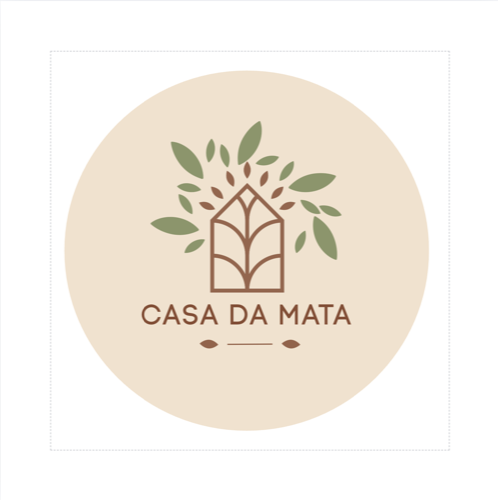
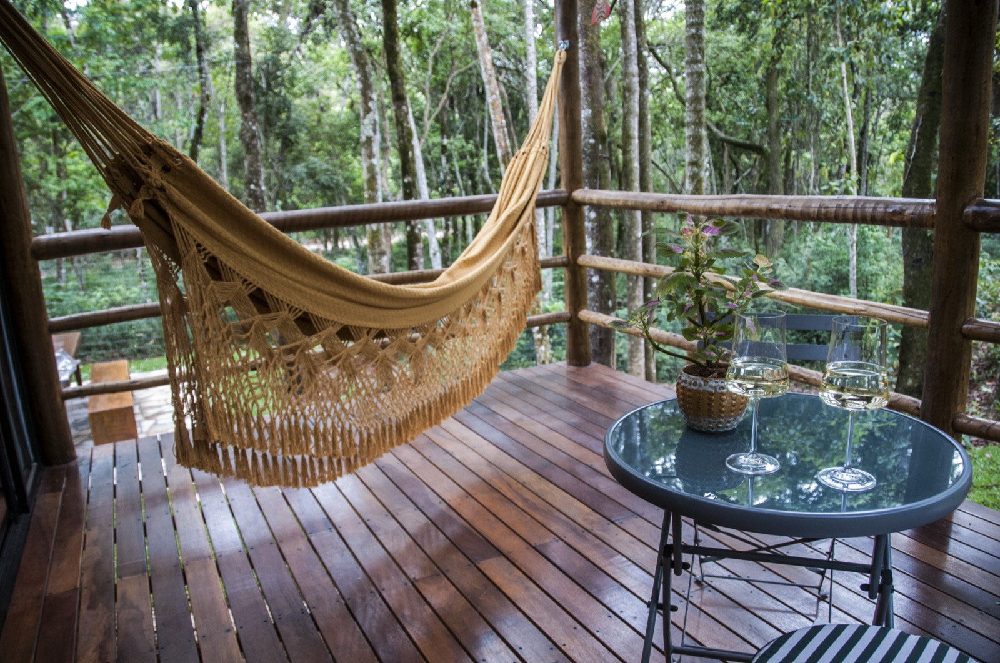
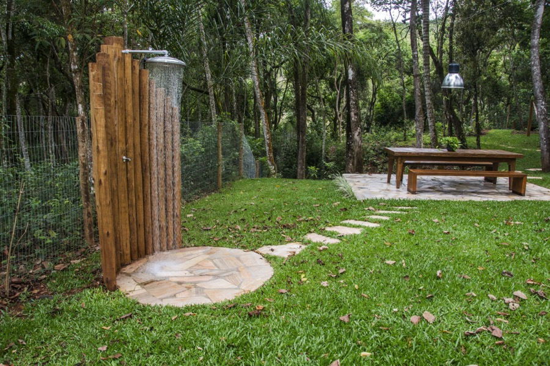
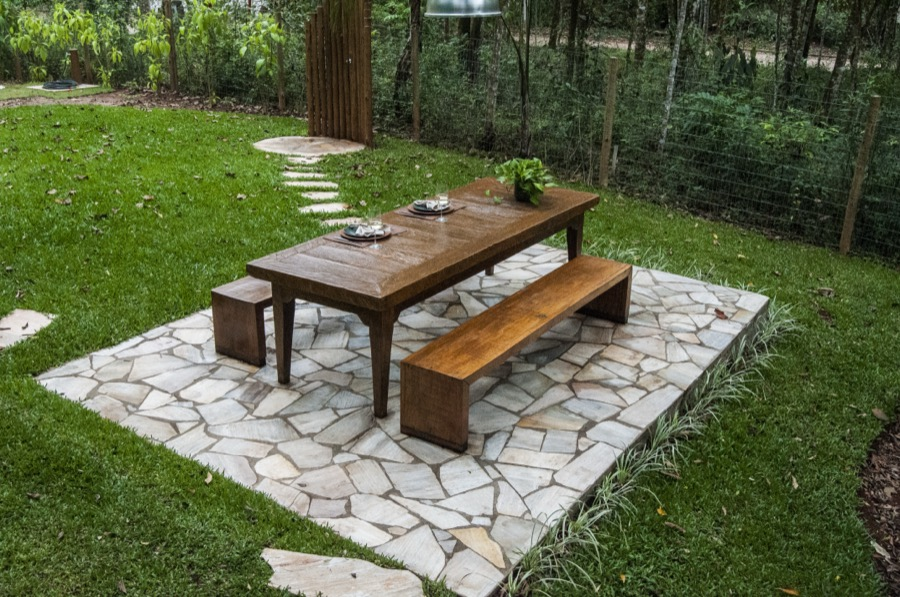
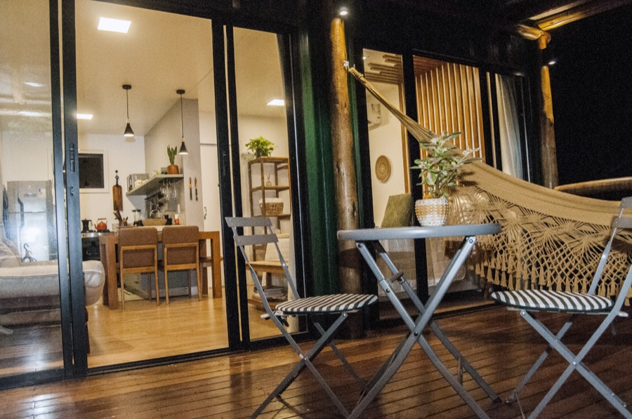
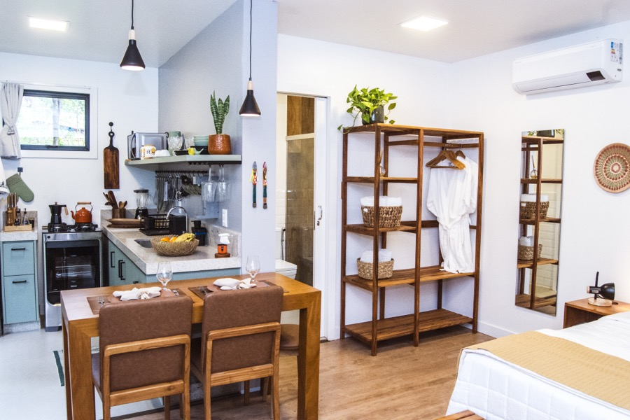
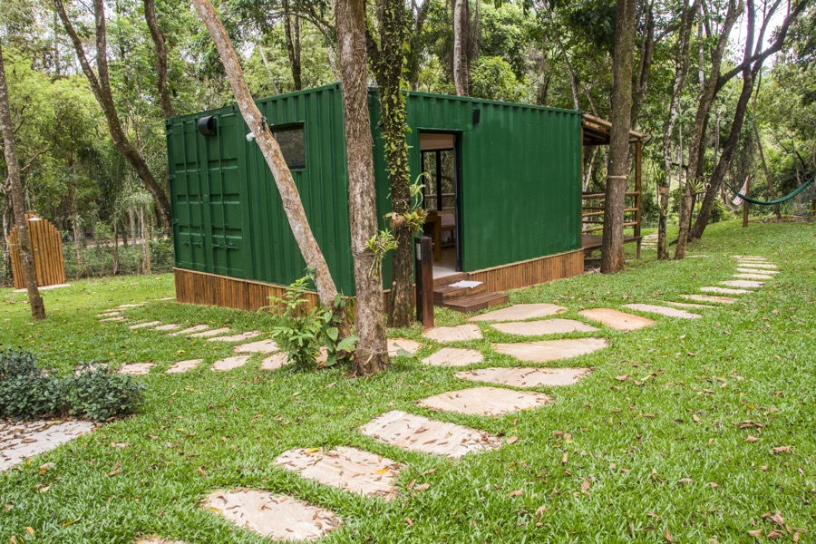
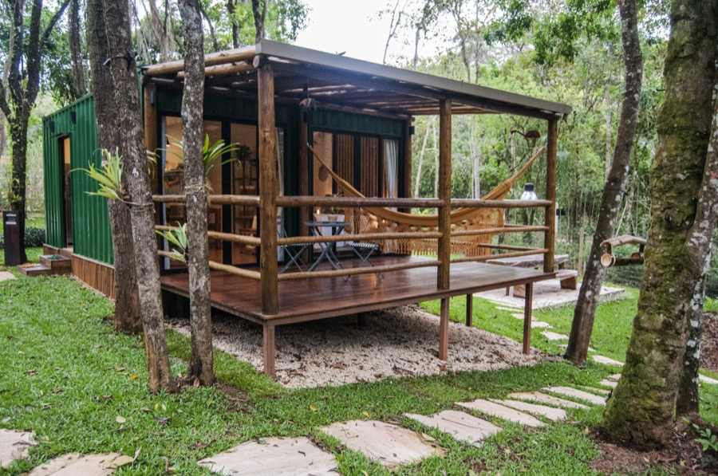

Casa contêiner elegante e arejada em meio a 1000 m² de mata, com riacho ao pé da casa, fogo de chão e redário. Condomínio Pasárgada, Nova Lima — a 26 km de BH.







Diferenciais
O som da água acompanha a estadia do início ao fim — parte do nome do próprio refúgio.
Noites sob céu estrelado, no cenário que completa a experiência da mata.
Quintal privado cercado por vegetação preservada, com redário e área de jantar externa.
Cofre de chaves, condomínio fechado com portaria controlada e câmeras 24 horas.
A casa por dentro
Quem já ficou
Adorei a localização, lugar super tranquilo. Todo o espaço muito bem planejado, super aconchegante, organizado e equipado.
Lucélia B.
A Casa da Mata é simplesmente encantadora. Cada detalhe revela o cuidado e o carinho na composição do espaço.
Maria Luiza
O local em si me surpreendeu, pessoalmente é ainda melhor do que nas fotos. Muito organizado, seguro e ideal para descansar.
Luís O.
Sua anfitriã
Bailarina, formada em Artes Visuais, apaixonada por natureza e pelas pequenas belezas do cotidiano. Superhost, com taxa de resposta de 100% em até 1 hora.
Superhost · hospeda há 5 meses